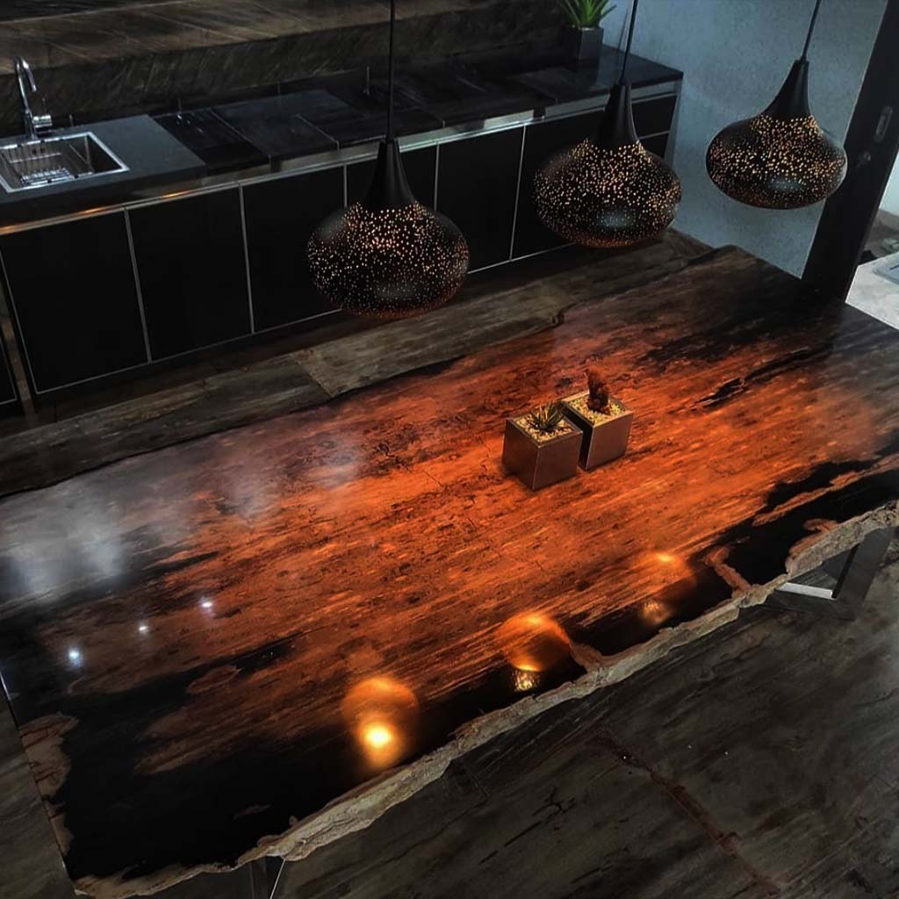

The Origins
From Ancient Forest to Artisan Workshop
Millions of years ago, the volcanic archipelago that would become Indonesia was covered by vast primordial forests. When these ancient trees fell and were buried beneath layers of volcanic ash and sediment, something extraordinary began to happen.
Over ten to twenty million years, mineral-rich groundwater slowly permeated each cell of the wood, replacing organic matter with silica and other crystalline minerals. The result is petrified wood — a material that is simultaneously wood and stone, carrying the memory of its origins in every grain, every ring, every crystalline facet.
"Each piece of petrified wood is a 20-million-year-old work of art, created by the earth itself."
The Craft
CV Karya Bersama & Petrified Wood Indonesia
Under the banner of CV Karya Bersama, our workshop in Bogor, West Java is where skilled artisans transform raw geological specimens into extraordinary furniture and décor. Every piece is hand-selected for its geological beauty — its unique mineral patterning, colour palette, and structural integrity.
Our craftsmen apply a combination of traditional Indonesian woodworking techniques and precision stone-polishing methods. The natural edge of each slab is preserved wherever possible, celebrating the original form of the ancient tree. Surfaces are polished to reveal the crystalline structure within, then finished to a lustre that will last for generations.
We carry over 170 product types — from intimate decorative slices and bookends to monumental dining tables and outdoor garden features. Every item in our catalogue is unique. When a piece sells, there is no replacement — only the next discovery.
The Showroom
PJ Antique — Our Bali Showcase
Our showroom in the village of Mas, Ubud — the artistic heart of Bali — was established to bring the beauty of petrified wood directly to local visitors, cultural travellers, and design enthusiasts from around the world.
The Mas village area has been a centre of wood craftsmanship for centuries, and it is the perfect setting for PJ Antique. Here, visitors can see, touch, and experience our full range of pieces in a curated environment that celebrates the material's extraordinary natural beauty.
We welcome all visitors — from private collectors to interior designers, from curious travellers to those seeking a truly one-of-a-kind statement piece for their home.
20M+
Years of Geological Formation
170+
Unique Product Types
1
Of a Kind — Every Single Piece

Visit the Showroom
Experience It First-Hand
No photograph can fully convey the depth of a polished petrified wood surface, or the sheer presence of a monumental dining table that weighs 400 kilograms and carries 15 million years of history.
We invite you to visit our showroom in Ubud and discover the piece that speaks to you.
Plan Your Visit